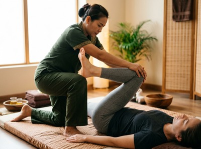
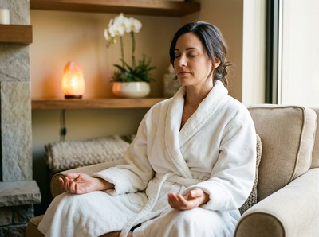

The McLean Museum and Art Gallery sits at the heart of Greenock West, one of the town's most established and culturally significant neighbourhoods.
Locals who work at the museum, visit regularly, or live nearby are well placed to enjoy thai massage in this part of Greenock, with Thai Massage Greenock just a short walk from Kelly Street along South Street.
Greenock West draws a mix of residents, visitors, and professionals. That includes museum staff, gallery-goers, and people working in the nearby civic and commercial quarter.
Many carry the kind of postural tension that builds up through long hours on their feet or time spent at a desk. Thai Massage Greenock is well placed to serve this community. The studio is close enough to make it easy to book a session before or after a visit to the museum, or on a day off in the area.

You can book your session online and choose a time that fits around your day in Greenock West.
Thai Massage Greenock offers a full range of authentic Thai treatments. Each one is delivered personally by Jariya Malone, a therapist trained at Bangkok's Wat Po temple.
Whether you want to release muscle tension after a long week or need time to fully decompress, there is a treatment suited to your needs.
From the McLean Museum on Kelly Street, Thai Massage Greenock on South Street is around a five to ten minute walk. Head south from Kelly Street, cross through the town centre, and South Street is easy to find just off the main shopping area.
Greenock West train station is about 8 minutes on foot from the museum. It sits within the same walkable zone as South Street. If you are arriving by train from Glasgow or Gourock, Greenock West is the most useful stop for both the museum and the studio.
Greenock Bus Station is around 5 minutes from Kelly Street, with regular services across Inverclyde.
Jariya Malone founded Thai Massage Greenock with a clear focus: to bring authentic, results-driven massage therapy to people in Inverclyde. Every session is tailored to what your body needs on that specific day.
Jariya draws on traditional Wat Po technique and years of hands-on experience. Whether you are dealing with neck pain, back tension, stress, or poor sleep, treatments are built around you, not a set routine.

This is a therapist-led practice, not a chain. Jariya keeps detailed notes after every visit and builds on past sessions to support long-term wellbeing. You can make a booking directly on the website and get started whenever suits you.
The McLean Museum and Art Gallery opened in 1876. It is the main museum in Inverclyde, home to a notable exhibition on James Watt, the Greenock-born inventor.
Its collections cover British and Scottish art as well as local industrial history. You can read more at McLean Museum on Wikipedia.
The museum sits within Greenock West, a neighbourhood shaped by the town's long traditions in engineering, culture, and community life. It makes a fitting base for a restorative treatment at Thai Massage Greenock after a morning in the galleries.
Thai Massage Greenock on South Street is around a five to ten minute walk from the McLean Museum on Kelly Street. Both locations are in the Greenock West area of central Greenock, making the journey easy on foot through the town centre.
Walking is the most practical option as both locations are close together in central Greenock. If you are arriving by train, Greenock West station is around 8 minutes on foot from the museum and within easy reach of South Street. Greenock Bus Station is about 5 minutes from Kelly Street, with regular routes serving the wider Inverclyde area.
Same-day bookings are available subject to therapist availability. The easiest way to check and confirm a time is through the online booking form on the website. It is worth booking ahead where possible, especially for popular evening and weekend slots.
Thai Foot Massage is a strong choice after a day of walking and standing. It uses reflexology-based techniques on the feet and lower legs to ease fatigue and improve circulation. Traditional Thai Massage is also well suited to anyone carrying tension through the back, hips, and shoulders. It combines acupressure and assisted stretching across the whole body.
For current opening hours and available times, please check the booking page or call 01475 600868. Jariya offers flexible appointment times to suit working schedules, including evening sessions.